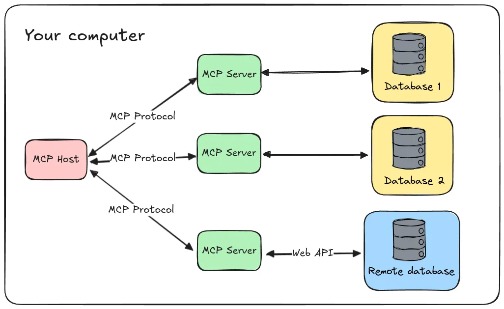
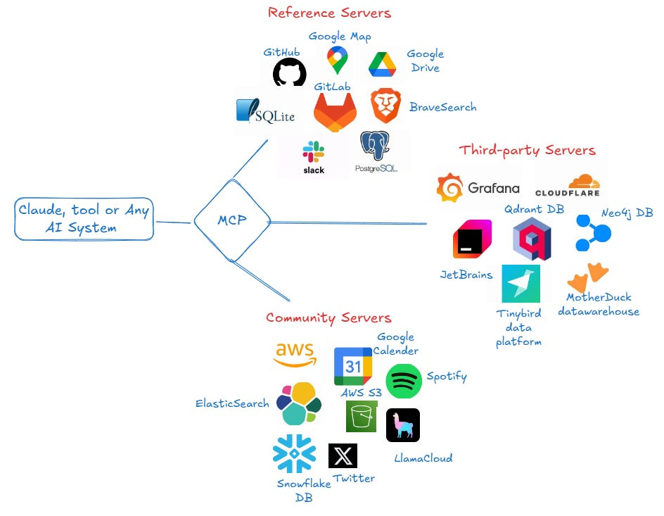
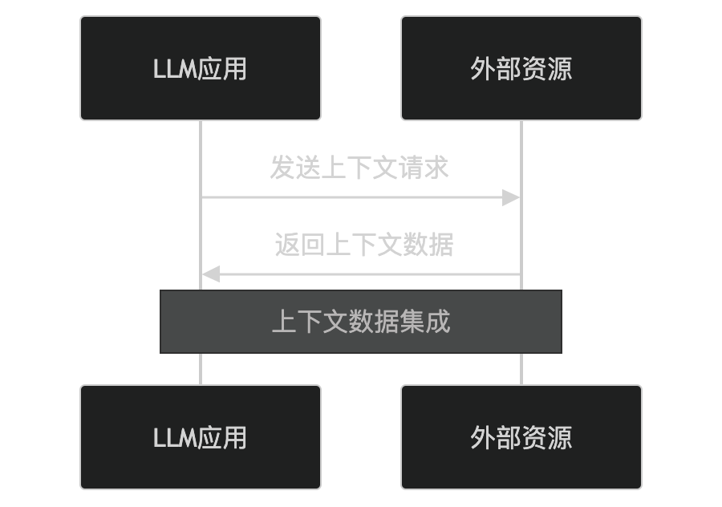
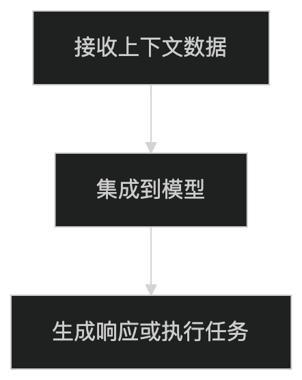
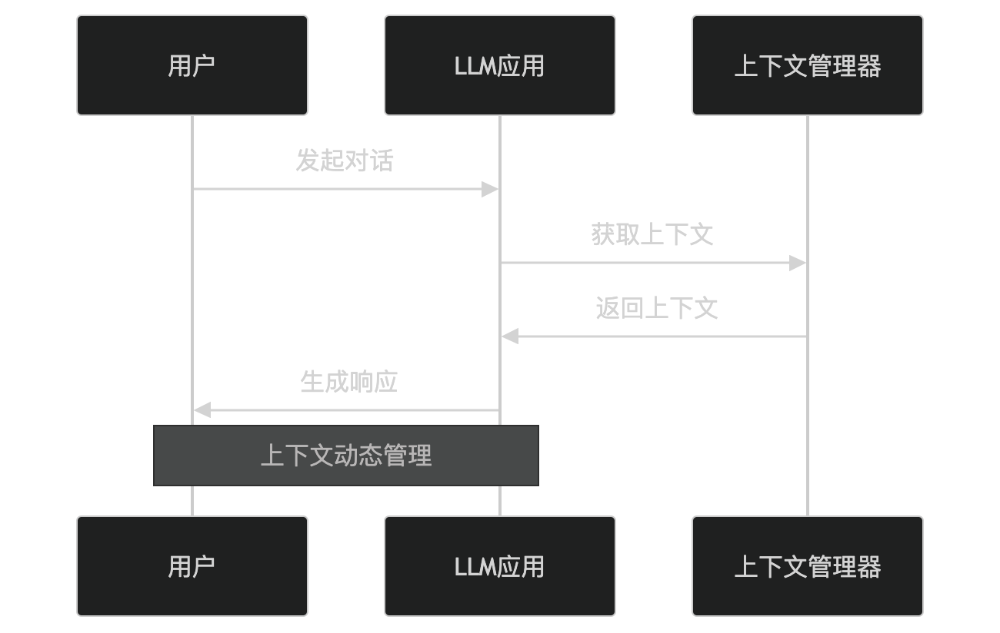

MCP Protocol
MCP (Model Context Protocol) is an open protocol designed to enable seamless integration between large language model (LLM) applications and external data sources, tools, and services, similar to the HTTP protocol in networking or the SMTP protocol in email.
The MCP protocol enhances the functionality, flexibility, and scalability of LLM applications by standardizing the way models interact with external resources.


MCP provides developers with a unified, efficient, and interoperable development environment by standardizing communication rules in the AI application ecosystem.
Core Concepts of MCP
The core of MCP ismodel context, that is, all external information and tools required by the LLM during operation.
MCP enables LLMs to dynamically access and integrate the following content by defining standardized interfaces and protocols:
- External data sources: such as databases, APIs, document libraries, etc., providing real-time or historical data for LLMs.
- Tools and services: such as computing tools, search engines, third-party services, etc., extending the capabilities of LLMs.
- Context management: dynamically maintaining the LLM's conversation context to ensure coherence and consistency.
MCP Architecture
The MCP architecture consists of four key parts:
- Host: A host is an AI application that expects to obtain data from servers, such as an integrated development environment (IDE), chatbot, etc. The host is responsible for initializing and managing clients, handling user authorization, managing context aggregation, and more.
- Client: The client is the bridge between the host and the server. It maintains a one-to-one connection with the server and is responsible for message routing, capability management, protocol negotiation, subscription management, and more. The client ensures that communication between the host and the server is clear, secure, and efficient.
- Server: The server is a component that provides external data and tools. It provides additional context and functionality for large language models through tools, resources, and prompt templates. For example, a server can provide API calls to external services such as Gmail and Slack.
- Base Protocol: The base protocol defines how hosts, clients, and servers communicate. It includes message formats, lifecycle management, transport mechanisms, and more.
MCP is like USB-C, allowing different devices to connect together through the same interface.

How MCP Works
MCP enables interaction between LLMs and external resources by defining standardized data formats and communication protocols.
MCP uses JSON-RPC 2.0 as the message format, communicating through standard request, response, and notification messages.
MCP supports multiple transport mechanisms, including local standard input/output (Stdio) and HTTP-based Server-Sent Events (SSE).
The MCP lifecycle includes three phases: initialization, operation, and shutdown, ensuring that connection establishment, communication, and termination all conform to the protocol specification.
The following is its workflow:
1. Context request
An LLM application sends a context request to an external resource, including the required data or service type.

- The LLM application sends a request to the external resource based on task requirements.
- The external resource returns the required data or service results.
2. Context integration
The LLM application integrates the context data returned by the external resource into the model to generate responses or perform tasks.

- The LLM application combines external data with the model's internal knowledge to generate more accurate or richer responses.
3. Context management
MCP supports dynamic management of the LLM's conversation context, ensuring coherence in multi-turn conversations.

- The context manager maintains the history and state of the conversation.
- The LLM application generates coherent responses based on the context.
Key Part of the Protocol - Messages
The core of MCP is using JSON-RPC 2.0 as the message format, providing a standardized way for communication between clients and servers.
The base protocol defines three basic message types: Requests, Responses, and Notifications.
The following is a detailed description of these three message types:1. Requests
Request messages are used to initiate operations from the client to the server, or from the server to the client.
The structure of a request message is as follows:
{
"jsonrpc": "2.0",
"id": "string | number",
"method": "string",
"params": {
"[key: string]": "unknown"
}
}jsonrpc: protocol version, fixed as"2.0"。id: unique identifier for the request, which can be a string or a number.method: the method name to call, which is a string.params: method parameters, an optional key-value pair object where keys are strings and values can be of any type.
2. Responses
Response messages are replies to requests, sent from the server to the client, or from the client to the server.
The structure of a response message is as follows:
{
"jsonrpc": "2.0",
"id": "string | number",
"result": {
"[key: string]": "unknown"
},
"error": {
"code": "number",
"message": "string",
"data": "unknown"
}
}
jsonrpc: protocol version, fixed as"2.0"。id: corresponding to the request'sidid, used to identify the request to which the response corresponds.result: if the request succeeds,resultthe field contains the result of the operation, which is a key-value pair object.error: if the request fails,errorthe field contains error information, where:code: error code, which is a number.message: error description, which is a string.data: optional additional error information, which can be of any type.
3. Notifications
Notification messages are one-way messages that do not require a reply from the receiver.
The structure of a notification message is as follows:
{
"jsonrpc": "2.0",
"method": "string",
"params": {
"[key: string]": "unknown"
}
}jsonrpc: protocol version, fixed as"2.0"。method: the method name to call, which is a string.params: method parameters, an optional key-value pair object where keys are strings and values can be of any type.
Notes
- Requests and Responses: Requests and responses are one-to-one; after the client sends a request, the server returns a response.
idThe field is used to associate requests and responses. - Notifications: Notifications are one-way; the sender does not need to wait for a reply from the receiver. Notifications are typically used in scenarios such as event pushing or status updates.
- Error handling: If a request fails, the response will contain the
errorfield, providing error codes and descriptions to help developers quickly locate issues.
Key Features of MCP
- Standardized interface: Define unified interfaces and protocols to ensure compatibility between LLMs and external resources.
- Dynamic integration: Support LLMs in dynamically accessing and integrating external data sources and tools.
- Context awareness: Support dynamic management of conversation context to improve coherence in multi-turn conversations.
- Openness and extensibility: Support third-party developers in extending features and resources for LLM applications.
Application Scenarios of MCP
MCP is widely used in the following scenarios:
- Enhanced Q&A systems: Provide real-time and accurate answers by integrating external data sources.
- Intelligent assistants: Perform complex tasks (such as booking, calculation, search, etc.) by integrating tools and services.
- Knowledge management: Provide professional domain knowledge support by integrating document libraries and databases.
- Multi-turn conversations: Achieve coherent multi-turn conversations through context management.
Pros and Cons of MCP
Advantages:
- Feature extension: Significantly extend the functionality of LLM applications by integrating external resources.
- Flexibility: Supports dynamic access to and integration of multiple data sources and tools.
- Openness: Standardized protocols support third-party development and integration.
Disadvantages:
- Complexity: Requires designing and maintaining interaction logic with external resources.
- Performance overhead: Accessing external resources may introduce additional latency.
Alternatives to MCP
In certain scenarios, the following alternatives can be used:
- Custom API: Custom API interfaces developed for LLM applications.
- Plugin mechanism: Use the plugin mechanism to extend the functionality of LLM applications.
- Knowledge graph: Integrate external knowledge through knowledge graphs.
Click me to share notes
<p style="font-size:14px;">Notes should be an extension of the content of this article!</p><br> <p style="font-size:12px;"><a href="../tougao.html" target="_blank">To submit an article, click here</a></p> <p style="font-size:14px;"><a href="../w3cnote/runoob-user-test-intro.html" target="_blank">How to get a registration invitation code</a></p> <h3 class="text-muted"><i class="fa fa-info-circle" aria-hidden="true"></i> You must <a href=";.html" class="runoob-pop">log in</a> before sharing notes!</h3> <p><a href="../w3cnote/runoob-user-test-intro.html" target="_blank">How to get a registration invitation code</a></p>